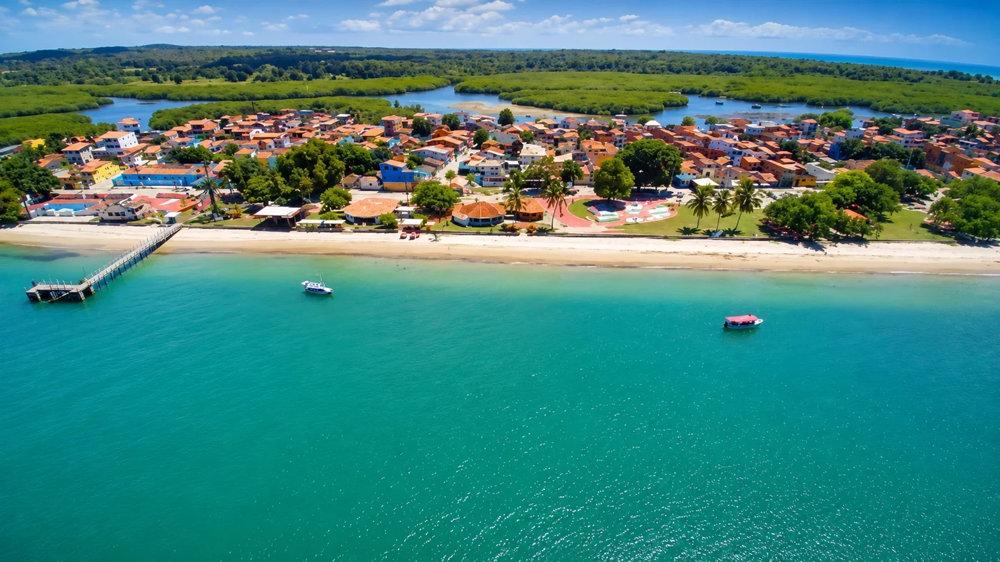
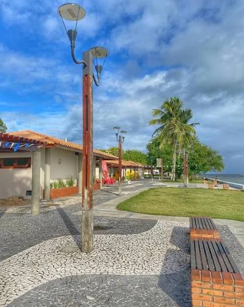

Vila pesqueira
Redes, canoas, barcos e conhecimento das marés.

Extremo sul da Ilha de Itaparica
Cacha-Pregos
Onde o rio encontra o mar, os barcos encontram o vento e a memória da pesca continua navegando entre gerações.
Mar e rio
Águas que moldam a paisagem
Pesca artesanal
Saberes transmitidos em família
Manguezais
Berçários naturais da vida costeira
Um distrito feito de água e movimento
01
02
03
O fim da estrada pode ser o começo de muitas descobertas
Cacha-Pregos está no extremo sul da Ilha de Itaparica e integra o município de Vera Cruz. Sua paisagem reúne praia, rios, canais, manguezais, barcos de pesca, casas, comércio e áreas de convivência.
A comunidade cresceu olhando para as águas. O mar não aparece apenas como cenário: ele é caminho, trabalho, alimento, fé, encontro e memória.
Natureza costeira
Manguezais, bancos de areia, canais e praias.
Cultura comunitária
Festas, saveiros, capoeira, culinária e oralidade.

A maré transforma o mapa
Bancos de areia, canais e margens mudam de aparência ao longo do dia.
O porto conta histórias
Barcos, redes e conversas preservam conhecimentos que não cabem em manuais.
O mangue é território de vida
Visitar também significa cuidar das áreas de pesca, trabalho e reprodução das espécies.
Por que Cacha-Pregos?
A explicação mais documentada relaciona o nome às formas da paisagem e a um peixe que teria sido comum na região.
Caixa + peixe-prego
Segundo a pesquisa reunida para esta página, existiam poças naturais que, vistas de cima, lembravam pequenas caixas. Na maré baixa, peixes conhecidos como peixes-prego ficavam presos nessas formações.
Com o uso popular, expressões como “caixa dos peixes-prego” teriam se transformado até chegar ao nome Cacha-Pregos.
Caixas naturais
+
Peixes-prego
→
Cacha-Pregos
“Lá na caixa-prego”
Na Bahia, a expressão “caixa-prego” também é usada para falar de um lugar muito distante. Como a comunidade fica no fim da estrada da ilha, muita gente passou a relacionar a frase ao seu nome.
Essa associação é popular, mas não possui a mesma sustentação histórica da explicação ligada ao peixe-prego.
Trabalho, família e pertencimento
01
02
03
A vila de pescadores
A pesca é uma das bases históricas de Cacha-Pregos. O conhecimento dos ventos, das marés e das espécies continua sendo transmitido no trabalho cotidiano.
Próximo ao porto, pescadores preparam redes, organizam embarcações, conversam e compartilham experiências. Canoas e barcos coloridos formam uma paisagem que também é espaço de produção.
Conhecimento das marés
O tempo da pesca depende da leitura das águas, dos ventos e das estações.
Trabalho familiar
Muitos saberes são aprendidos entre pais, mães, avós, filhos e vizinhos.
Porto como espaço social
Além do desembarque, o porto é lugar de conversa, reparo, circulação e memória.
O encontro entre rio, mar e manguezal
Canais, bancos de areia e vegetação costeira formam uma paisagem que muda com a maré e sustenta parte importante da vida local.
01
Mangue
Abrigo e reprodução de peixes, siris, caranguejos, ostras e outras espécies.
Bancos de areia
Formações visíveis principalmente durante períodos de maré mais baixa.
Canais
Caminhos de água usados por embarcações e influenciados pela maré.
Proteção costeira
A vegetação ajuda a reduzir erosões e mantém o equilíbrio das margens.
Água escura nem sempre significa sujeira
Em alguns pontos, a água pode ganhar tons mais escuros devido à mistura com águas fluviais e matéria orgânica do manguezal. Essa coloração pode ser uma característica natural dos estuários.
Calma aparente, maré em movimento
A praia reúne trechos de águas tranquilas, áreas arborizadas, embarcações e proximidade com canais. Correntes e condições de maré podem variar, por isso a observação local é indispensável.
A orla também é espaço de moradia, comércio e trabalho. Uma visita responsável respeita acessos comunitários, evita resíduos e reconhece a importância das áreas de pesca.
Saveiros, regatas e caminhos pelo Recôncavo
Antes de muitas estradas e motores, os saveiros foram fundamentais para transportar pessoas, mercadorias e histórias pela Baía de Todos-os-Santos.
E MARÉ
A embarcação também é patrimônio
As regatas transformam a navegação tradicional em celebração. Velas, madeira, técnica e trabalho coletivo revelam conhecimentos construídos por gerações de mestres, pescadores e tripulantes.
As travessias ajudam a conectar Cacha-Pregos a Jaguaripe e a outras localidades do Recôncavo. O mar funciona como estrada e ponte entre comunidades.
O fim da estrada terrestre se transforma em ponto de partida pelas águas.
Festas, fé e saberes comunitários
As tradições de Cacha-Pregos mostram que a identidade local se constrói no encontro entre religiosidade, trabalho, música, comida e participação coletiva.
Festa de Santo Amaro
A celebração reúne novenas, missas, procissões, música e encontros comunitários. O material consultado registra uma tradição de aproximadamente oito décadas.
As datas podem mudar de acordo com a programação de cada ano.
São Pedro dos pescadores
A procissão de São Pedro, tradicionalmente celebrada em 29 de junho, reúne pescadores, roupas de trabalho, embarcações e símbolos da vida no mar.
Lavagem de Cacha-Pregos
Cortejos, música, água de cheiro e manifestações católicas e afro-brasileiras ocupam as ruas e reforçam vínculos entre famílias.
Capoeira Angola
A comunidade abriga a sede do grupo Semente do Jogo de Angola, associada à transmissão de saberes, rodas, oficinas e encontros culturais.
Culinária do mar e do mangue
Peixes, mariscos, siri, caranguejo, camarão, polvo, moquecas, pirões, caldos e ensopados aparecem em receitas familiares preparadas com medidas aprendidas pela experiência.
Histórias que precisam ser registradas
Fotografias, entrevistas e relatos de moradores ajudam a documentar acontecimentos que nem sempre aparecem em fontes oficiais.
Visitar sem apagar quem vive aqui
Turismo e comunidade precisam caminhar juntos
Cacha-Pregos recebe visitantes, veranistas e passeios, mas continua sendo território de moradia, trabalho e cultura.
Valorizar a comunidade significa manter acessos públicos, preservar manguezais, respeitar pescadores e marisqueiras, reduzir resíduos e priorizar serviços e produtos locais.
Conecta Vera Cruz · Memória coletiva
Vozes de Cacha-Pregos
Você conhece alguma história, tradição, receita, lenda ou curiosidade sobre Cacha-Pregos? Compartilhe sua lembrança.
Compartilhe uma memória
Conte algo que você viveu, ouviu de moradores antigos ou considera importante preservar.
Evite divulgar telefone, endereço ou outros dados pessoais.
Memórias da comunidade
0 publicações
Histórias compartilhadas
Pesquisa e leitura crítica
Fontes da página
Texto sobre a história, a origem do nome, a pesca, os manguezais, as festas, a capoeira, a culinária e a memória de Cacha-Pregos.
Referências sobre a organização territorial de Vera Cruz e a presença histórica dos distritos do município.
Informações reunidas em reportagem de 2025 sobre a inauguração e a preservação da cultura pesqueira da comunidade.
Imagens de Cacha-Pregos, da orla, das águas e das regatas fornecidas para o projeto educativo.